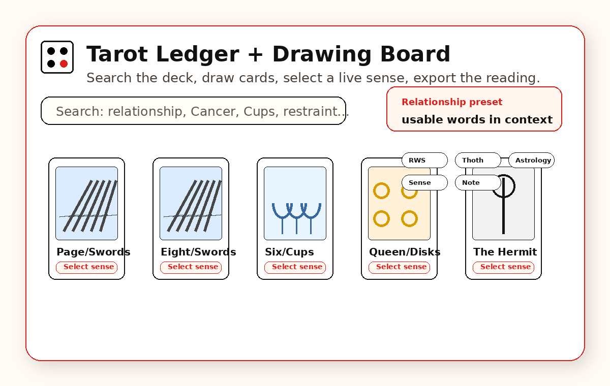
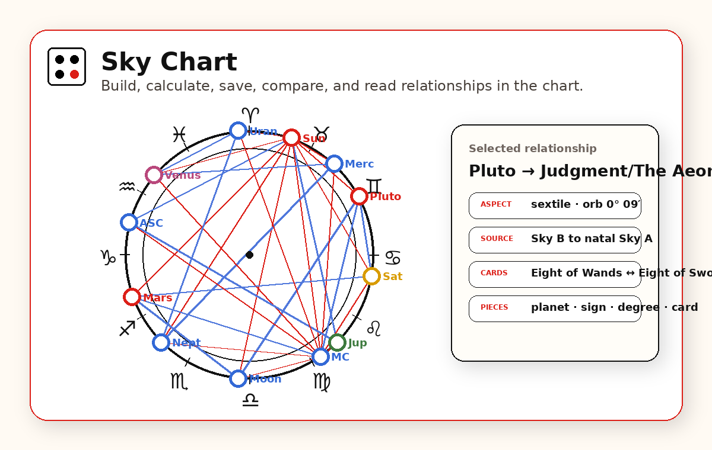
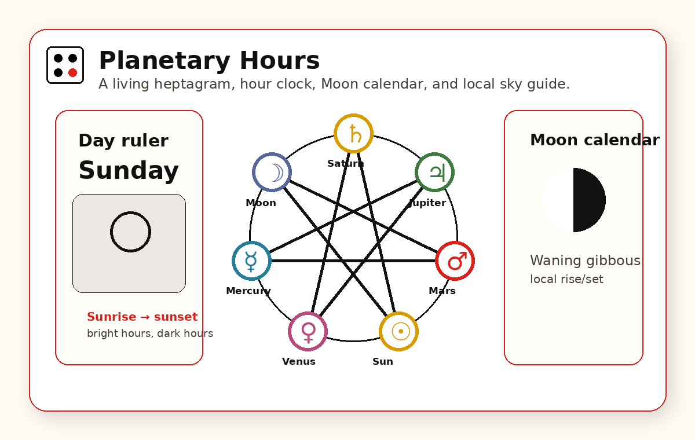
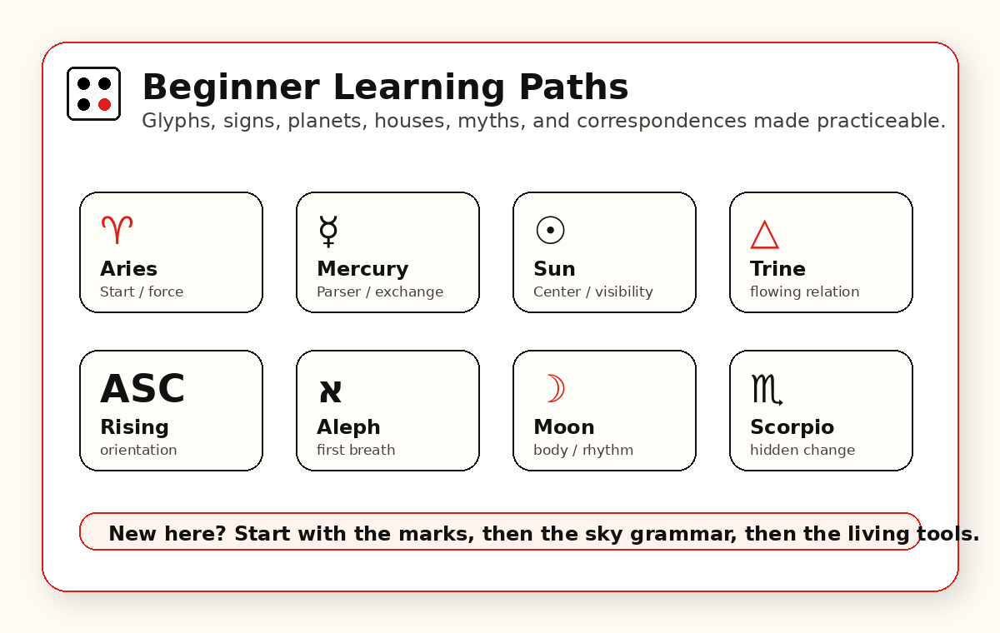

The Ledger exposes card identity, correspondences, ingredients, and language. Drawing Board turns those referents into deliberate reading structures.
Anniversary Edition · Living Architecture
Oracle of Relphi
A living symbolic learning environment for Tarot, astrology, planetary timing, glyph literacy, mythic correspondence, and harmonic research.
Relphi makes the referents behind symbols explicit, then shows how those referents relate across systems so patterns can be examined rather than merely asserted.
What Relphi is
A reference system for symbolic relationships.
Oracle of Relphi brings Tarot, astrology, planetary timing, geometry, color, myth, and symbolic language into one architecture. The aim is not to collapse them into one answer. It is to make each system legible enough that correspondences, recurrences, and differences can be inspected directly.
Architecture
Reference first. Relationship second. Reading follows.
Sky Chart makes placements, houses, aspects, configurations, and chart-card correspondences visible as a relational field.
Planetary Hours and temporal sky work make symbolic conditions traceable through actual moments rather than abstract chronology.
Glyphs, constellations, myth, measures, and spectrum tools build the vocabulary needed to read the larger system coherently.
Planetary intervals, geometry, and recurrence research investigate how proportional relationships may organize symbolic resonance.
Instruments
Enter a tool when you are ready to work.
The homepage explains the system. The instruments live on their own pages.

Card · reading · referent
Tarot Ledger + Drawing Board
Search the deck, inspect correspondences, build readings, and work with Crafted or Free board structures.
Open Tarot Ledger
Sky · aspect · relationship
Sky Chart
Build, calculate, save, compare, and inspect skies and their relationship geometry.
Open Sky Chart
Time · ruler · local sky
Planetary Hours
Follow the day ruler, hour ruler, Moon, heptagram, and local planetary timing.
Open Planetary Hours
New here
You do not have to know the system before you enter it.
Learn the marks, learn the sky grammar, then use the instruments with the referents visible.
- Learn the marks. Practice signs, planets, aspects, letters, and symbolic vocabulary.
- Learn the sky grammar. Build familiarity with houses, signs, planets, and relationships.
- Read the Ledger. Search cards and examine how ingredients become language.
- Return to time. Let the day and hour keep the symbolic system grounded in a moment.